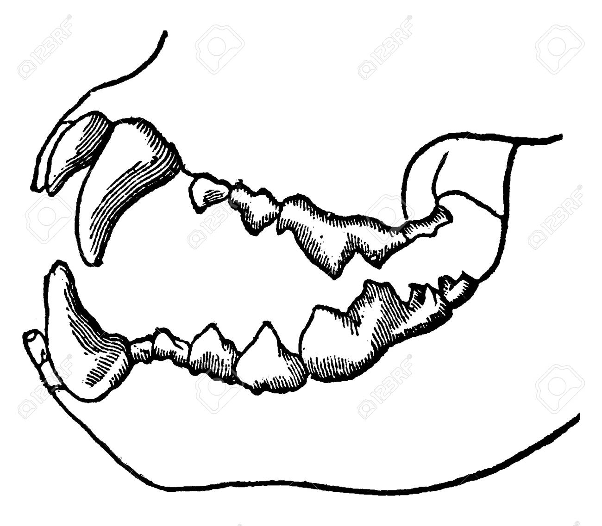
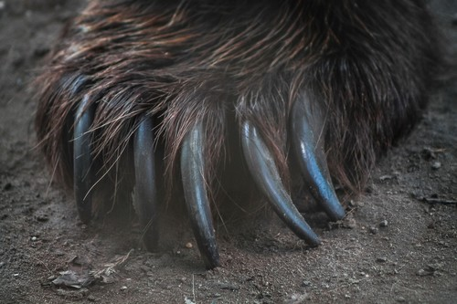
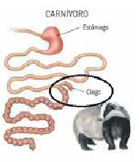

Tengo estas loncheras que sirven para guardar la comidad de cada animal por varios dias hasta que llega la hora de la comida
Debo colocar la comida correcta en su lugar correcto dependiendo de la alimentacion del animal
Si necesitas saber toda la alimentacion de los animales puedes leer mi libro
CONSEJOS
Puedes mirar el nombre
Un animal carnívoro se identifica principalmente por su dieta, que se basa en la carne de otros animales. También se pueden observar características físicas que los ayudan en la caza y el consumo de carne, como dientes afilados y garras.
Dientes: Tienen dientes afilados y fuertes, especialmente los caninos, diseñados para desgarrar y perforar la carne.
Garras: Las garras afiladas les permiten agarrar, sujetar y manipular a sus presas.
Sistema digestivo: Su sistema digestivo suele ser más corto y adaptado para procesar la carne rápidamente.



Un animal herbívoro se identifica principalmente por su dieta, que se basa en consumir exclusivamente plantas y vegetales. Esto incluye hojas, tallos, frutos, semillas, flores y otras partes de las plantas. Además, pueden tener características anatómicas y fisiológicas específicas para facilitar la digestión de material vegetal, como dientes planos y sistemas digestivos especializados.
Dientes:
Dientes planos y aplanados, diseñados para moler y triturar plantas, a diferencia de los dientes puntiagudos de los carnívoros.
Sistema digestivo:
Pueden tener estómagos múltiples o una cámara de fermentación en el intestino para ayudar a digerir la celulosa de las plantas.